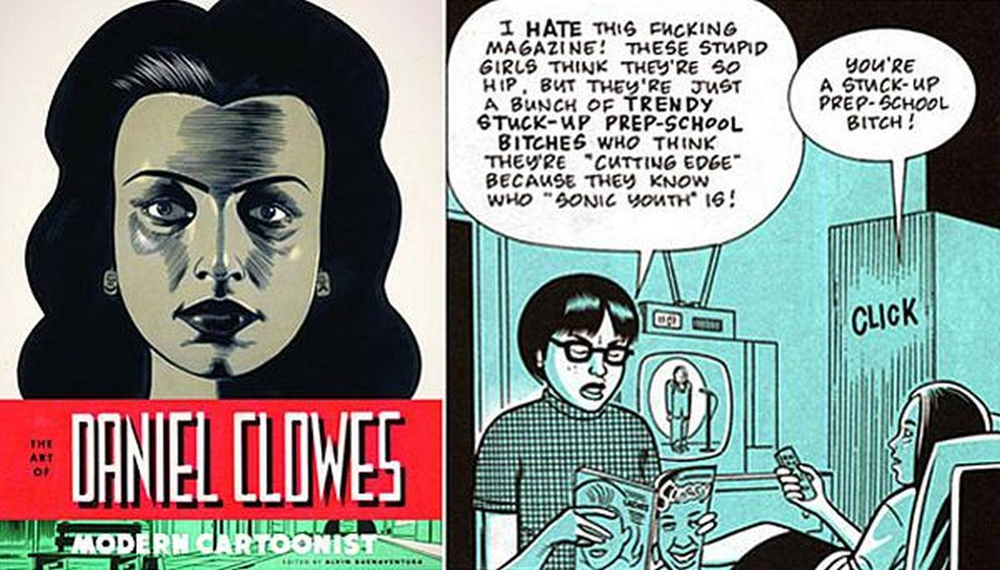
×
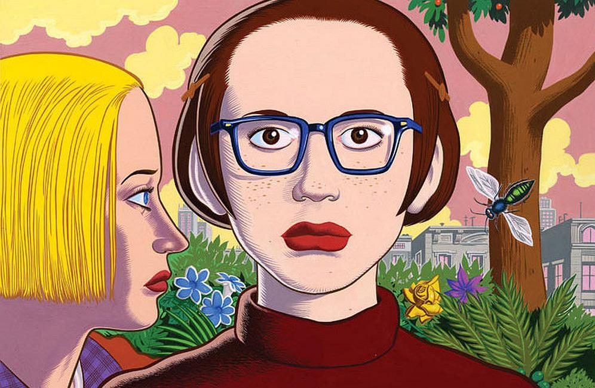
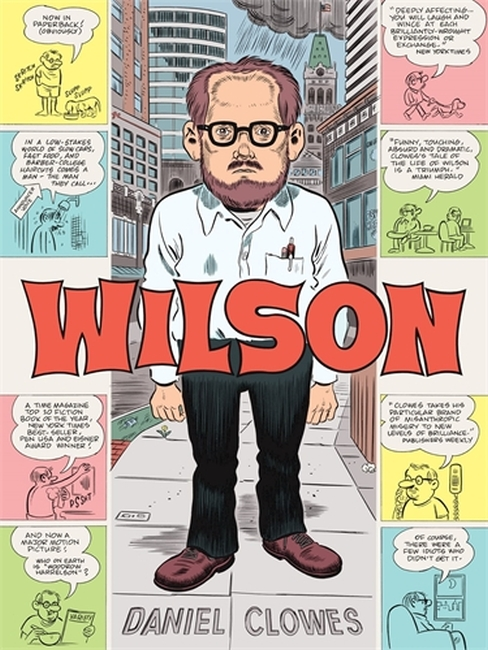
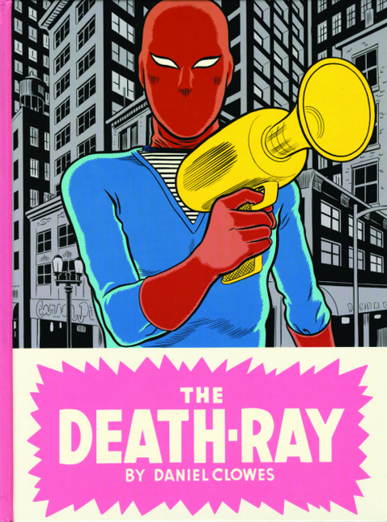
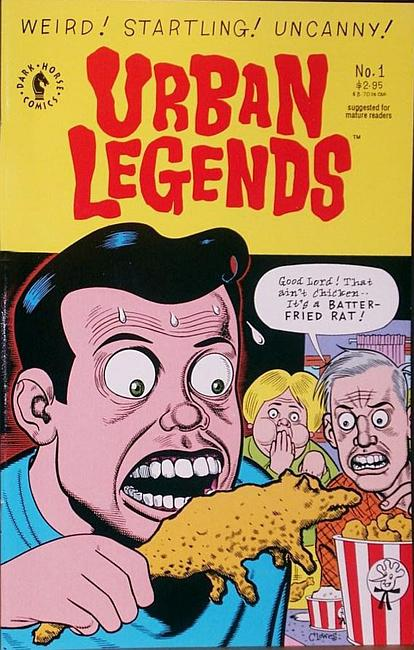
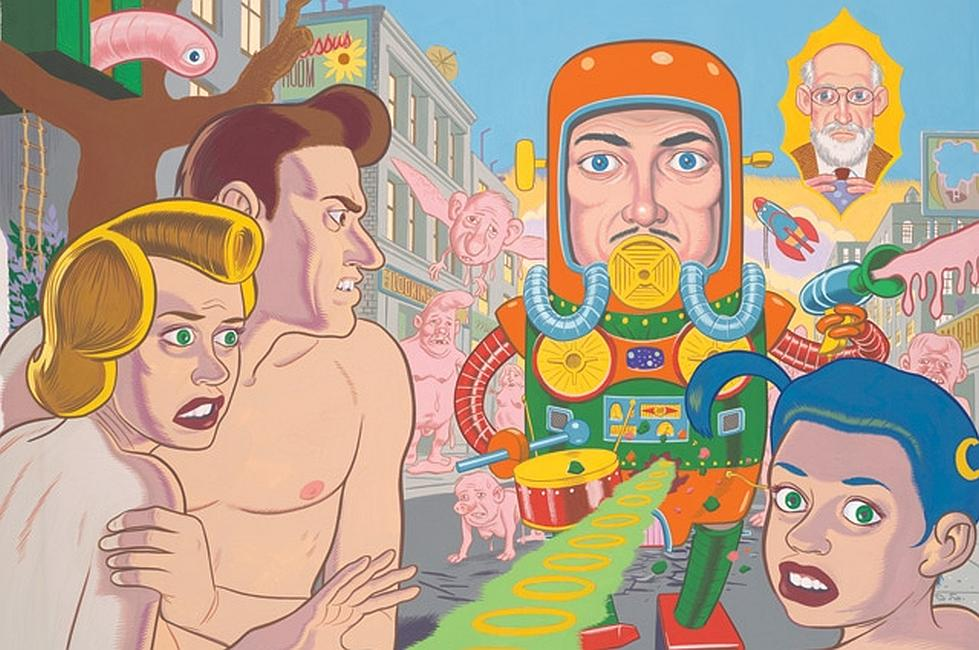
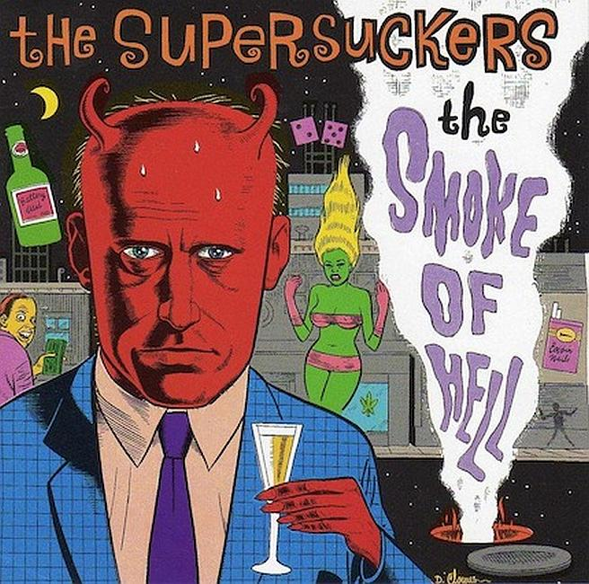
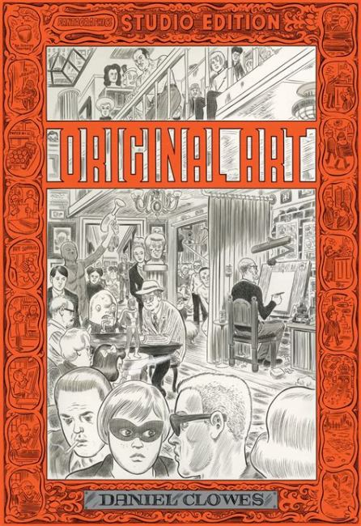
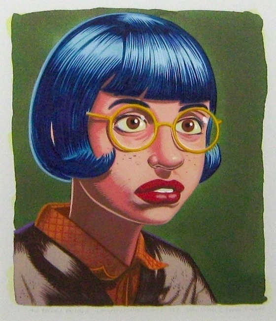
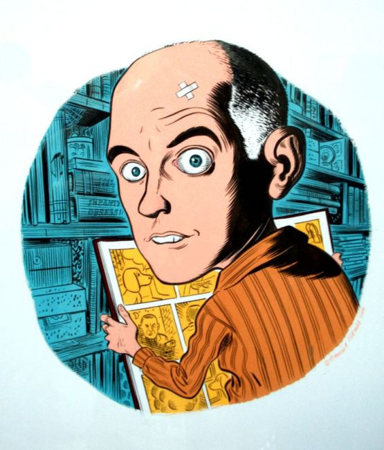
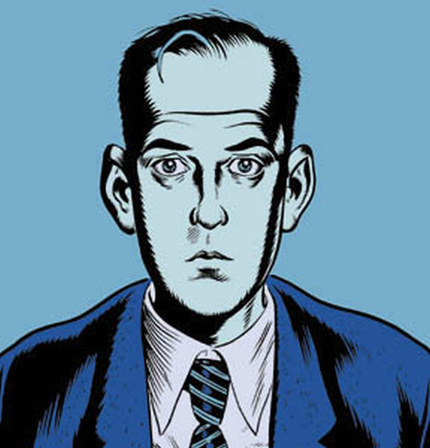
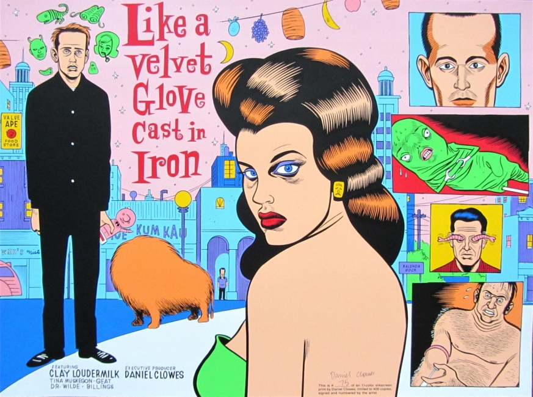
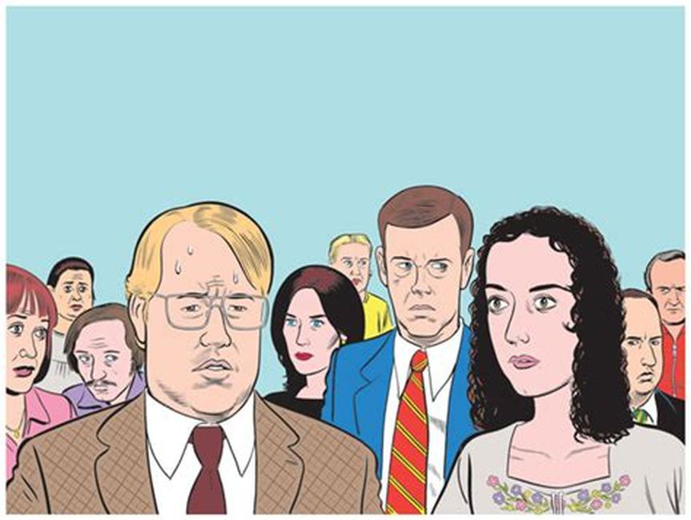
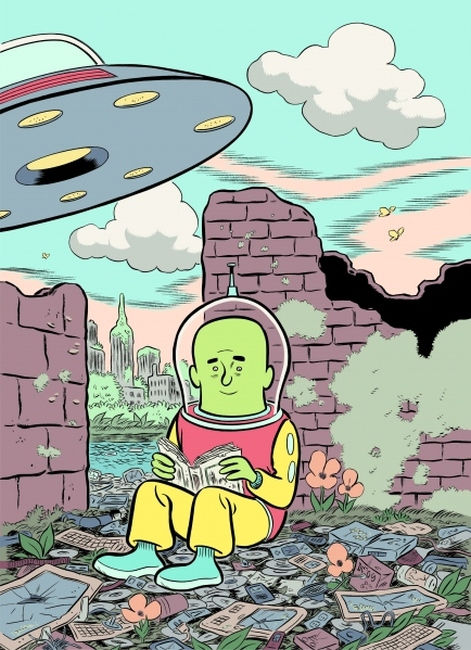
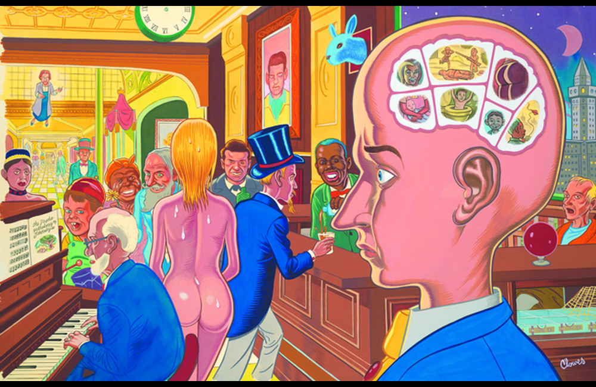
❮
❯
Daniel Gillespie Clowes (born April 14, 1961) is an American cartoonist, graphic novelist, illustrator, and screenwriter. Most of Clowes's work first appeared in Eightball, a solo anthology comic book series. An Eightball issue typically contained several short pieces and a chapter of a longer narrative that was later collected and published as a graphic novel, such as Like a Velvet Glove Cast in Iron (1993), Ghost World (1997), and David Boring (2000).
Clowes's illustrations have appeared in The New Yorker, Newsweek, Vogue, The Village Voice, and elsewhere. With filmmaker Terry Zwigoff, Clowes adapted Ghost World into a 2001 film and another Eightball story into the 2006 film, Art School Confidential. Clowes's comics, graphic novels, and films have received numerous awards, including a Pen Award for Outstanding Work in Graphic Literature, over a dozen Harvey and Eisner Awards, and an Academy Award nomination.
Series
Graphic novels
Anthologies
Other appearances
"Justin M. Damiano" in The Book of Other People (2008)
Movies
- Ghost World (2001)
- Art School Confidential (2006)
- Wilson (2017)
Miscellaneous
- Cracked – recurring strip "The Uggly Family" (1986–1989)
- Thee Headcoats – Heavens To Murgatroyd, Even! It's Thee Headcoats! (1990)
- Santa Cruz Skateboards – Corey O'Brien full-color deck (1991)
- National Lampoon – series of one-page strips (1991)
- Urge Overkill – The Supersonic Storybook cover (1991)
- The Supersuckers – The Smoke of Hell cover (1992)
- Eightball postcard set (1993)
- "Boredom" – a mock board game (1994)
- The John Peel Sub Pop Sessions cover (1994)
- Ghost World: A Screenplay (2001)
- Little Enid Doll (2001–2002)
- Enid & Rebecca Cloth Dolls (2002)
- Yo La Tengo – Merry Christmas from Yo La Tengo cover (2002)
- Enid Hi-Fashion Glamour Doll (2004)
- Pogeybait Doll (2006)
- Art School Confidential: A Screenplay (2006)
- The New Yorker cover (May 24, 2010)
- Dan DeBono's Indy – created original cover and interviewed
Commercial work
- OK Soda – Clowes was one of the main illustrators for OK Soda cans and print materials, along with fellow Fantagraphics artist Charles Burns.

{kind=link}
{kind=link}
{kind=link}